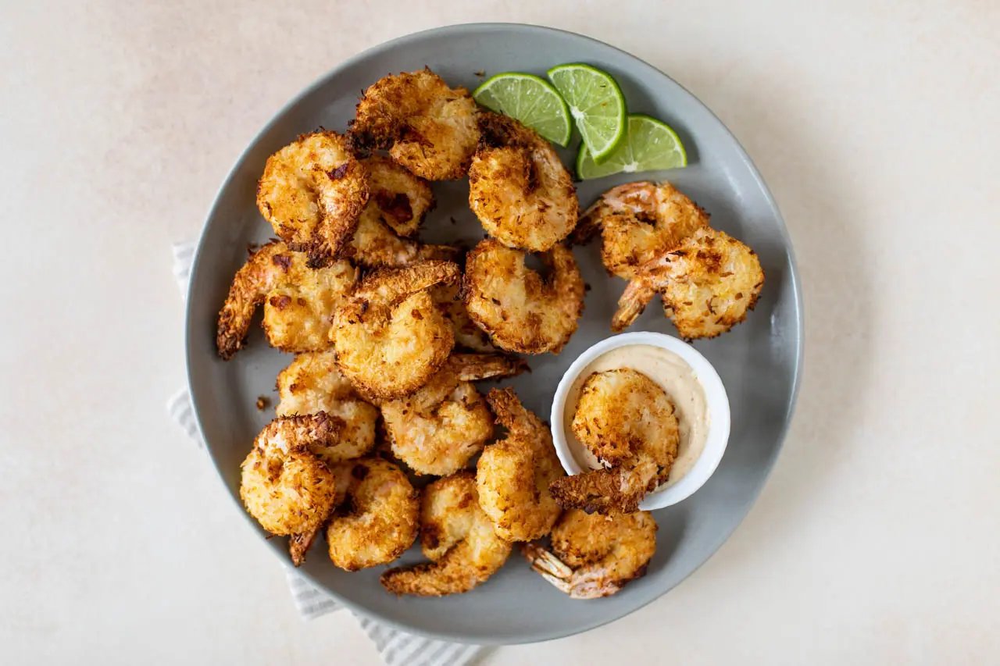

Coconut Shrimp

The best way to eat shrimp is air fried and coated in coconut!
Ingredients
- 1 lb thawed large or jumbo shrimp, peeled and deveined with tails on
- ½ cup all-purpose flour
- 2 large eggs, whisked
- 1 ½ cups unsweetened flaked or shredded coconut
- ½ cup panko bread crumbs
- Preheat the air fryer to 375°F. Wash and pat dry the shrimp, ensuring no extra moisture remains.
- Add the flour and eggs to separate small mixing bowls. In a medium sized mixing bowl stir together the coconut, bread crumbs, salt and pepper until well blended.
- Coat each shrimp lightly with flour, dip in egg wash and coat in the coconut mixture. Press down to ensure the coating sticks to the shrimp. Brush the breading lightly with oil for a more golden colour, if desired.
- Transfer the breaded shrimp to the air fryer in a single layer, ensuring the shrimp are not touching. Depending on the size of the air fryer, you may have to work in batches.
- Cook in preheated air fryer at 375 F for 5-7 minutes, flip and cook for an additional 5-7 minutes, until the shrimp is cooked throughout and golden.
- As the shrimp cooks, prepare the dipping sauce: In a small serving bowl stir together the mayonnaise, lime juice, lime zest, paprika and cayenne until well combined.
- Transfer dip to a plate followed by the shrimp. Serve warm!